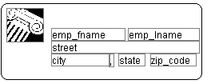
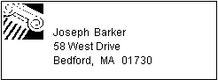

This section describes the activities that help you change the layout and appearance of the controls in a DataWindow object.
When reorganizing controls in the Design view, it is sometimes helpful to see how large all the controls are. That way you can easily check for overlapping controls and make sure that the spacing around controls is what you want.
 To display control boundaries in a DataWindow object:
To display control boundaries in a DataWindow object:
Select Design>Options from the menu bar.
The DataWindow Options dialog box displays.
Select the Show Edges check box.
PowerBuilder displays the boundaries of each control in the DataWindow object.
 Boundaries display only in the Design view The boundaries displayed for controls are for use only in
the Design view. They do not display in a running DataWindow object or
in a printed report.
Boundaries display only in the Design view The boundaries displayed for controls are for use only in
the Design view. They do not display in a running DataWindow object or
in a printed report.
The DataWindow painter provides a grid and a ruler to help you align controls.
 To use the grid and the ruler:
To use the grid and the ruler:
Select Design>Options from the menu bar.
The DataWindow Options dialog box displays. The Alignment Grid box contains the alignment grid options.
Use the options as needed:
| Option | Meaning |
|---|---|
| Snap to Grid | Make controls snap to a grid position when you place them or move them. |
| Show Grid | Show or hide the grid when the workspace displays. |
| X | Specify the size (width) of the grid cells. |
| Y | Specify the size (height) of the grid cells. |
| Show Ruler | Show a ruler. The ruler uses the units of measurement specified in the Style dialog box. See "Changing the DataWindow object style". |
Your choices for the grid and the ruler are saved and used the next time you start PowerBuilder.
 To delete controls in a DataWindow object:
To delete controls in a DataWindow object:
Select the controls you want to delete.
Select Edit>Delete from the menu bar or press the Delete key.
In all presentation styles except Grid, you can move all the controls (such as headings, labels, columns, graphs, and drawing controls) anywhere you want.
 To move controls in a DataWindow object:
To move controls in a DataWindow object:
Select the controls you want to move.
You can reorder columns in a grid DataWindow object at runtime.
See "Working in a grid DataWindow object".
You can copy controls within a DataWindow object and to other DataWindow objects. All properties of the controls are copied.
 To copy a control in a DataWindow object:
To copy a control in a DataWindow object:
Select the control.
Select Edit>Copy from the menu bar.
The control is copied to a private PowerBuilder clipboard.
Copy (paste) the control to the same DataWindow object or to another one:
PowerBuilder pastes the control at the same location as in the source DataWindow object. If you are pasting into the same DataWindow object, you should move the pasted control so it does not cover the original control. PowerBuilder displays a message box if the control you are pasting is not valid in the destination DataWindow object.
You can resize a control using the mouse or the keyboard. You can also resize multiple controls to the same size using the Layout drop-down toolbar on PainterBar2.
To resize a control using the mouse, select it, then grab an edge and drag it with the mouse.
To resize a control using the keyboard, select it and then do the following:
| To make the control | Press |
|---|---|
| Wider | Shift+Right Arrow |
| Narrower | Shift+Left Arrow |
| Taller | Shift+Down Arrow |
| Shorter | Shift+Up Arrow |
You can resize columns in grid DataWindow objects.
 To resize a column in a grid DataWindow object:
To resize a column in a grid DataWindow object:
Position the mouse pointer at a column boundary.
The pointer changes to a two-headed arrow.
Press and hold the left mouse button and drag the mouse to move the boundary.
Release the mouse button when the column is the correct width.
Often you want to align several controls or make them all the same size. You can use the grid to align the controls or you can have PowerBuilder align them for you.
 To align controls in a DataWindow object:
To align controls in a DataWindow object:
Select the control whose position you want to use to align the others.
PowerBuilder displays handles around the selected control.
Extend the selection by pressing and holding the Ctrl key and clicking the controls you want to align with the first one.
All the controls have handles on them.
Select Format>Align from the menu bar.
From the cascading menu, select the dimension along which you want to align the controls.
For example, to align the controls along the left side, select the first choice on the cascading menu. You can also use the Layout drop-down toolbar on PainterBar2.
PowerBuilder moves all the selected controls to align with the first one.
If you have a series of controls and the spacing is fine between two of them but wrong for the rest, you can easily equalize the spacing around all the controls.
 To equalize the space between controls in a DataWindow object:
To equalize the space between controls in a DataWindow object:
Select the two controls whose spacing is correct.
To do so, click one control, then press Ctrl and click the second control.
Select the other controls whose spacing match that of the first two controls. To do so, press Ctrl and click each control.
Select Format>Space from the menu bar.
From the cascading menu, select the dimension whose spacing you want to equalize.
You can also use the Layout drop-down toolbar on PainterBar2.
Suppose you have several controls in a DataWindow object and want their sizes to be the same. You can accomplish this manually or by using the Format menu.
 To equalize the size of controls in a DataWindow object:
To equalize the size of controls in a DataWindow object:
Select the control whose size is correct.
Press Ctrl and click to select the other controls whose size should match that of the first control.
Select Format>Size from the menu bar.
From the cascading menu, select the dimension whose size you want to equalize.
You can also use the Layout drop-down toolbar on PainterBar2.
You can specify that you want to eliminate blank lines or spaces in a DataWindow object by sliding columns and other controls to the left or up if there is blank space. You can use this feature to remove blank lines in mailing labels or to remove extra spaces between fields (such as first and last name).
 Slide is used by default in nested reports PowerBuilder uses slide options automatically when you nest
a report to ensure that the reports are positioned properly.
Slide is used by default in nested reports PowerBuilder uses slide options automatically when you nest
a report to ensure that the reports are positioned properly.
 To use sliding columns or controls in a DataWindow object:
To use sliding columns or controls in a DataWindow object:
Select Properties from the control's pop-up menu and then select the Position tab in the Properties view.
Select the Slide options you want:
These options are also available on PainterBar2.
 If you are sliding columns up Even blank columns have height; if you want columns to slide
up, you need to specify as Autosize Height all columns above them
that might be blank and that you want to slide other columns up
through.
If you are sliding columns up Even blank columns have height; if you want columns to slide
up, you need to specify as Autosize Height all columns above them
that might be blank and that you want to slide other columns up
through.
In a mailing label that includes first and last names, as well as address information, you can use sliding to combine the columns appropriately.
In the following label, emp_lname, the comma, state, and zip_code are specified as slide left. Edges are shown to indicate the spacing between the columns. Notice that there is a small amount of space between controls. This space is necessary for Slide Left to work properly:

When you preview (run) the DataWindow object, the last name, comma, state, and zip code slide left to remove the blank space:
